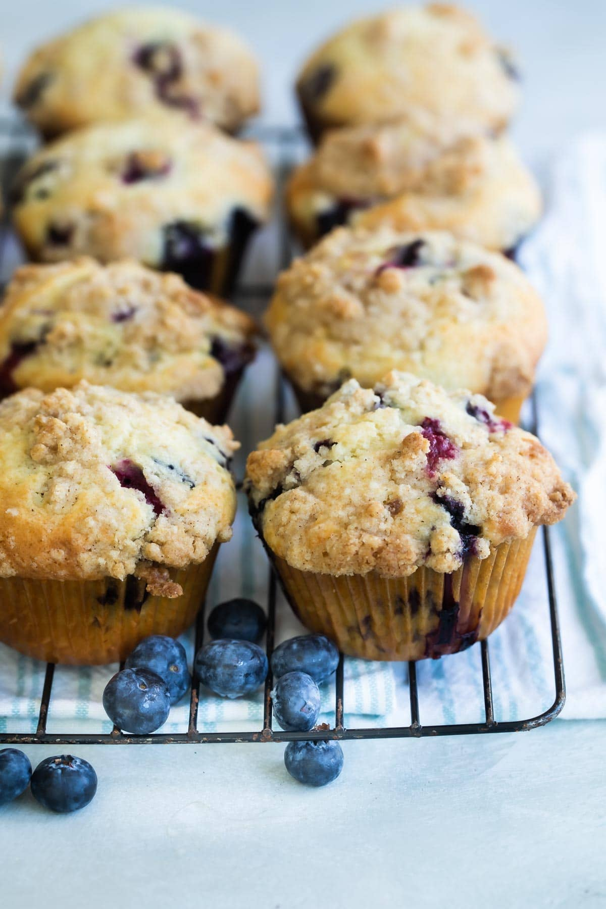
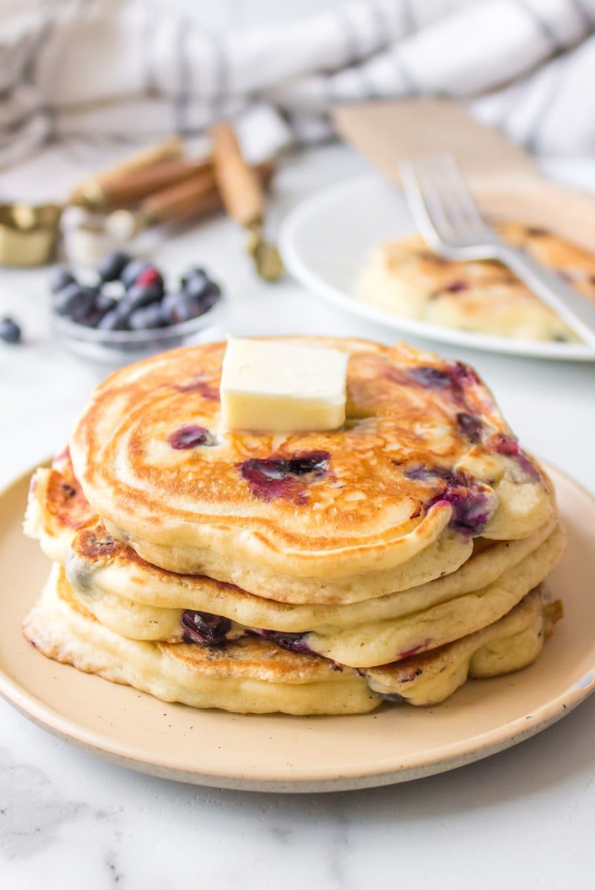
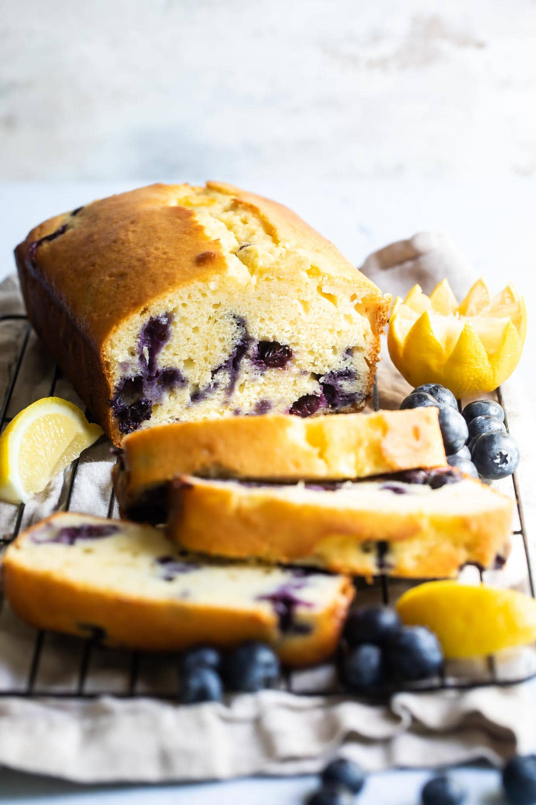

My Favorite Recipes
Blueberry Muffin
Total Time
35 mins
Servings
12 muffins
Author
Meggan Hill

INGREDIENTS
For the blueberry muffins:
- 2 cups all-purpose flour
- 1 cups granulated sugar
- 2 teaspoons baking powder
- 1/2 teaspoon salt
- 2 eggs
- 1/2 cup butter melted
- 1/2 cup milk
- 1 teaspoon vanilla extract
-
2 cups (1 pint) fresh blueberries washed, drained,
and picked-over, or frozen (see note 1)
For the streusel topping:
- 1/4 cup all-purpose flour
- 2 tablespoons brown sugar packed
- 2 tablespoons granulated sugar
- 1/4 teaspoon ground cinnamon
- 1/8 teaspoon salt
- 2 tablespoons butter cold
Instructions:
-
Preheat oven to 400 degrees. Prepare a muffin pan with cupcake
liners. In a large bowl, sift together 2 cups flour, 1 cup
sugar, baking powder, and ½ teaspoon salt. Set aside.
-
In a medium bowl, whisk eggs until smooth. Add the ½ cup melted
butter, milk, and vanilla, and whisk until combined. Add egg
mixture to flour mixture and stir until combined. (Dough will
be lumpy.) Fold in blueberries.
-
To prepare the streusel topping, in a medium bowl combine ¼ cup
flour, 2 tablespoons brown sugar, 2 tablespoons granulated
sugar, cinnamon, and ⅛ teaspoon salt. Using a pastry cutter,
cut in butter until topping is crumbly and coarse.
-
Fill prepared muffin cups with batter. Top each muffin with
streusel topping, about 1 tablespoon each. Bake until a
toothpick inserted in the center of a muffin comes out clean
with a few crumbs attached, about 18 to 22 minutes.
Cool muffins on a rack for several minutes before removing
from pan. Cool completely and store in an airtight container,
up to 4 days.
Blueberry Pancake
Total Time
20 mins
Servings
4 servings (2 pancakes each)
Author
Meggan Hill

INGREDIENTS:
- 1 1/2 cups all-purpose flour
- 3 1/2 teaspoons baking powder (see note 1)
- 1 tablespoon granulated sugar
- 1/2 teaspoon Salt
- 1 1/4 cups milk (see note 2)
- 1 egg
- 3 tablespoons butter melted
-
1 cup blueberries fresh or frozen
(but not thawed, see note 3)
- butter and maple syrup, for serving
Instructions:
-
In a large bowl, whisk together flour, baking powder, sugar,
and salt. Make a well in the center and pour in the milk,
egg, and melted butter; mix until smooth. Gently fold in the
blueberries.
-
Heat a griddle or frying pan over medium high heat, greasing
if desired (see note 4). Pour or scoop the batter onto the
griddle, using approximately ¼ cup for each pancake.
-
When bubbles start to form on the first side, carefully flip
and brown the second side. Repeat with remaining batter
(you should have about 8 pancakes). Serve hot with butter and
maple syrup.
Blueberry Lemon Yogurt Cake
Total Time
1 hr 15 mins
Servings
8 servings
Author
Meggan Hill

INGREDIENTS:
- 1 ½ cups all-purpose flour
- 2 teaspoons baking powder (see note 1)
- 1/4 teaspoon Salt
- 1 cup granulated sugar
- 1 cup plain Greek yogurt
- 4 eggs
- 2 teaspoons lemon zest
- 1/2 teaspoon vanilla extract
- 1/2 cup vegetable oil
- 6 ounces fresh blueberries or 1 cup frozen (see note 2)
Instructions:
-
Move an oven rack to the middle position and preheat oven to
350 degrees. Line a loaf pan with parchment paper and coat with
nonstick cooking spray.
-
In a medium bowl, whisk together the flour, baking powder, and
salt. Set aside.
-
In a large bowl, whisk together sugar, yogurt, eggs, zest, and
vanilla. Add the dry ingredients in 3 batches, whisking to
incorporate after each addition. Fold in oil and stir carefully
until uniformly combined. Fold in the blueberries and stir
until just incorporated.
-
Pour the batter into the prepared pan and bake for 1 hour until
a toothpick inserted comes out clean. Remove from the oven and
cool in the pan for 10 minutes.
-
Using a sharp knife, slice around the inside of the loaf pan
to loosen the cake and flip out onto a wire rack set over a
baking sheet. Cool the cake completely.